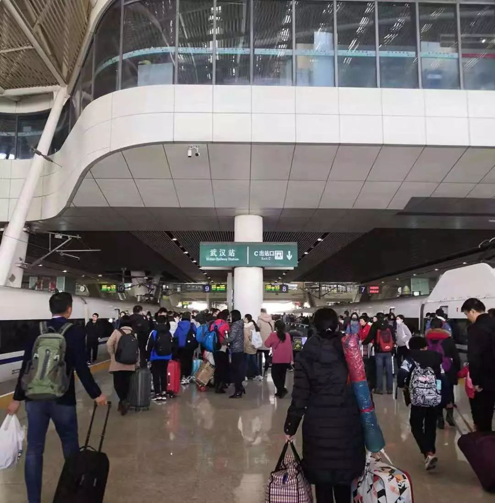

三个武汉人的外地隔离日记｜故事FM
原文链接 备份链接 🎧 点击上方图片，跳转「故事FM」小程序，收听真人讲述。记得添加「我的小程序」，一键收听全部故事哟！ 故事FM 前几天采访的武汉人，都是目前身在武汉的武汉人。但我们知道，现在散布在全国各地的武汉人，甚至湖北人，都在主动 …
大家好，我是田静。
疫情爆发最严重的那几天，我家的亲戚被隔离了。
听到消息后家里人都吓得不轻。原来是亲戚小龙春节前去过武汉一晚，回来后就发烧、胸闷、呼吸困难，在老家农村，只能监管，不能诊治。
每天在家隔离，实时向当地村委会汇报情况，所有人都不能接触他，独自一人吃了碗饺子过了年。
除夕夜他胸闷加重，发烧突破临界值到37.7度时，小龙发过来消息说很害怕。
我也很紧张，但却无能为力，一点忙都帮不上。
病毒目前没有特效药这是公知的，小龙只能每天在家看大量的新闻，寻找尽可能的控制办法。无意间看到群里分享了一个确诊女孩的日记。
日记详细记录了她与病毒抗争四天的切身感受。连续高烧，濒临死亡的状态下女孩成功活了下来。
女孩在日记里写到：我是武汉一所大学医学院的临床研究生，我想记录下我的抗疫过程，也许对医学有研究。
女孩坚强又勇敢，给了小龙很大的信心，他开始调整心态，积极应对可能到来的一切。
隔离六天后，小龙病情好转，他把女孩的日记发给了我，日记太过详细，怎么吸氧、怎么避免压迫肺脏、怎么控制身体变僵、怎么监视测脉搏，甚至濒死体验都写了。
一个重病患者怎么能记录得这么详细呢？看起来像在写小说。我打电话到她市里的防疫指挥中心核实，又转接到当地的宣传部了解。
证实确有此人，目前正在积极养病不便打扰。我把他们两个的真实体验都记录下来，想分享给更多读者，也给无数正在崩溃的患者以希望。
我想，希望在任何时候，都是一种支撑生命的安全力量。

感染后的第二天
我在鬼门关走了一圈
@林林（化名）
年龄：约24岁
职业：医学院的临床研究生
坐标：河南
第一天：首个住进县医院隔离病房的病人
1月22日，我感到有些发烧，一测量，体温计显示38度。
我立马打了120，因为自己刚从武汉回来，心里预感到可能被冠状病毒感染。当时脑子里闪过很多念头，但很混乱，只能在家静静等救护车把我带走。
回忆之前的三四天，好像偶尔会有轻微的畏寒，睡觉时心跳明显，肌肉偶有酸痛的症状，那时候内心有一点点预感，跟很多朋友一样，一边在怀疑自己是不是中枪，一边抱着侥幸心理，希望不是自己。
在我高烧38度后，那些跟我有类似症状的朋友也陆续确诊。那一刻，我才意识到这个病毒，可能会是席卷全华人的一场瘟疫，已经到了不太可能控制的阶段。
住院当天，我就开始呼吁我全家人以及认识的朋友们在家隔离，不要出门，即使出门也要趁外面没人的时候出门，只有更多健康的人顺利躲过这次瘟疫，中国才有救。
很快，我被拉到了县里面的隔离病房，我是住进来的第一个，在家人、医院领导、全县领导、所有医护人员的帮助下，我在第二天进行了所有化验：胸片、CT、病原检测，最终确诊阳性。
当时内心没有害怕和恐惧，心想一切的难受都是慢慢到来的，我只要一天天变得更坚强，挺住就可以。
之后就是不停的输液，因为没有针对此次疾病的特效药，更多的是对症治疗。
不过大家一定要记住，对于免疫系统出现问题的药物治疗手段，几乎都是辅助作用，不要期待着药物治疗，会让自己立马康复起来，最强大的是我们自己的身体和信念。
所以在这期间配合医生是一方面，自己心态放松积极面对是一方面。多喝热水，不停的喝，每天3L的量，并且自己主动去排尿，不要等着膀胱要炸了才想着去，这个疾病会降低膀胱的敏感度，即时排尿很重要。
另外，要吃东西，不能吃凉的，最好少食多餐，牛奶想办法热一下，喝了凉的很容易吐，如果是碳水化合物之类也是少食多餐，以避免一下子吃太多后体温明显升高，吃太少可能会低血糖，非常虚弱。
总之，就是要慢慢的感受自己身上的疾病，一点点的想办法，用身边的食物，水去调整身体的不适。
第二天：高烧感受到濒临死亡的状态
住院第二天的晚上，是我24岁本命年的最后一天，我在想挺过最后几个小时的水逆，接下来就是顺风顺水，走向人生巅峰了吧。
12点之前，我就感觉自己呼吸有点无力，摸了自己的心跳，怎么就弱下来了呢？再摸了颈动脉，怎么就搏动的这么脆弱了呢？
大半夜，一下子反应起来，我缺氧了。
我开始拼命呼吸的同时，赶紧呼叫了医生，让他们尽快送来了氧气瓶。
对着氧气，我大口地呼吸，并且身体的胸廓努力的配合起伏，这时候无论再艰难，都不能睡着，睡着了可能就忘了自主呼吸！
也最好不要躺下，躺下去肺脏自身的重量需要克服，所以我斜靠着，保持和腿100度左右，尽量让肺腑不被其他内脏压迫。
尽管呼吸困难只是一小段时间，但那是我在这几天里离死神最近的一次，我求救了医生随时准备抢救。
他们半夜两三点穿着隔离衣在我的病房鼓励我，让我挺住，让我不要焦虑，可是我的手脚是冰的、麻木的，颜色是发白的，听力是非常弱的，说话都没有任何力气，我告诉医生，如果我没抢救过来器官衰竭，就尽早放弃，不要再浪费医疗资源。
求生的欲望吧，我反正就是接着拼命的吸氧，不断的想办法活动四肢，想让它们热起来，但同时录了临终视频，我怕很多人没看到我最后的样子，也没能和我告别……
又过了两三个小时后，我的手脚逐渐热了起来，整个人不再是濒死的状态，但依旧是发烧将近39度的状态。
我当然是庆幸自己又发烧了，起码我的免疫系统又开始战斗了，我吸着氧气，让自己平静。不敢入睡，虽然继续肌肉酸痛，但如果不酸痛，我睡过去忘了呼吸怎么办。
恍惚中挨到了第二天早上，我明显地感觉到自己渡过了一劫。
脱离氧气，自主呼吸逐渐恢复。虽然体温依旧升高，但更有信心了，相信新的一天，只会是我抗战胜利的后半程。
第三天：挣扎记录下真实感受，为病患提供参考
治疗有序进行，今天吃了饭菜，是医院的饭菜，没有筷子怎么办？把牛奶的吸管当筷子吧，吃完没有呕吐，好现象。
整体呼吸平稳，下午的时候体温一度恢复到36.5，但可能这个跟输液输的抗炎药有关。吃过饭后，体温又慢慢升高，不过已经没有非常高了，顶多38度，肌肉酸痛的情况轻了很多。
晚上感觉自己体力尚好，趁机用了两个小时又写了会文字，我是武汉一所大学医学院的临床研究生，我想记录下来，也许对医学有研究。
但这个对我来说是复杂的工作，我担心自己脑袋用多了有点缺氧，开始尽量减少了和朋友们的联系，高烧情况下脑子是不够用的，注意力不能跳转来跳转去的，因为用脑需要氧。
忙完后十点多，很疲惫，又怕因为自己身体太虚弱，会感觉迟钝，想让医生上监护。医生说尽量不要上，担心监护的声音我会更睡不着。那好吧，谨遵医嘱，我迅速断网关灯睡觉。
没有失眠，没有心慌，没有呼吸急促，我一觉睡到了半夜两点多，腿抖突然惊醒，赶紧量了体温，很好，37度。自己头脑清醒，身体舒适。
感觉自己抗战进度条到达了99%。赶紧告诉家人我的状况，让他们安心，然后迅速接着睡。
第四天：活过来，感谢身边所有的人
早上的七点多，醒后体温平稳，37度。
后来护士进来给我抽血，今天应该就是测量我疾病转归的时候了。
我告诉她，我好了。
她说，我很强大，长得真好看。
此时的我，一周多没洗澡、没洗头、没洗脸，狼狈不堪的样子是刚经历完与疾病的一场厮杀…..
在隔离间陪伴我的他们每一个人都很伟大，比起我自己，他们才是更为之拼尽全力的战士。
希望在这场疾病中，为我操了无数心的家人、县领导、市专家和所有的医生护士们都能平安渡劫，中国的公共卫生事业需要你们……

△ 林林朋友圈截图
从武汉回来，我发烧、呼吸困难被隔离了
@小龙（化名）
年龄：33岁
职业：科研机构研究员
坐标：河北
隔离前：中国人觉得武汉是疫区，武汉人觉得汉口是疫区
我在武汉读的大学和研究生，去年是我在外工作后的第一年，春节我师弟热切的邀请我回武汉同师兄弟一聚。
我18号到武汉和老师同学们聚会时，他们也只是轻描淡写的讲了一下这个新型冠状病毒肺炎的情况，讨论了一下他的源头华南海鲜市场。
19号的武汉火车站和地铁上都基本没有几个带口罩的人。因为当时武汉人根本就不重视，都在开心的置办年货，有调侃“中国人觉得武汉是疫区，武汉人觉得汉口是疫区，而汉口人觉得华南海鲜市场周围才是疫区”。

△1月19日武汉火车站没带口罩的春运人群
当时的武汉人大部分跟没事人一样，大家都认为这个病不会人传人。可我们群里19号就发了医生看病全身防护的照片。
直到钟院士去了武汉，发布可以人传人的消息，主席强调高度重视疫情，政府强力管控，官方正式发布消息后，老百姓们才重视起来。
1月20号也就是农历二十六，我算是回乡比较早的人，还没来得及走亲访友，只去看了同村的爷爷奶奶，就没再出门，就等着过大年了。
21号过后村里就开始排查武汉过来的人，或者途径武汉的人，要在村子里登记。为了大家好，要居家隔离观察14天，每天要汇报2次体温，上午一次，下午一次。
隔离第四天：开始低烧，除夕夜独自一人吃饺子
我23号的时候感觉不太舒服，24号也就是大年三十下午开始低烧。村里有个工作群，主要是村支书和社区医生引导工作，我加了医生的微信说“我低烧，37.2度”。
当时人心惶惶，我有途径武汉史，他们都开始高度重视我的情况，但让我不要紧张，并给了我一个体温限值是37.4度，超过了就要送县医院。这个时候我算是正式对外公布被隔离。
体温计是自备的，村里送来了口罩和医用酒精，再次嘱咐我要隔离，家里人不要出门。
我叔和我奶奶他们来我家，都被驱散了，我家的门是谁都不让进了。
家里人也开始加强防护，除了戴口罩，不跟我直接接触外，开始喷医用酒精，所有的沟通都是微信交流，饭菜热水给我放到门外，我自己拿进来。农村厕所都是坑式的，据说粪便也可以传染，所以厕所也是单独一间。
以往过年都是聚在一起，今年三十我就一个人吃的饺子，都没有心情去庆祝过年，春晚也没看，好多人都对歌舞生平感到愤慨，随着疫情的严峻，全国人民都在紧张、焦虑、恐惧。
除夕当晚温度开始上升，最高到37.7左右，胸闷加重，呼吸有的时候有点堵，我开始害怕。
隔离第五天：胸闷加重，决定去医院
初一一早跟大家反映了情况后开始联系医院，医院的情况是目前床位不够，如果住院也要和疑似病例放一起观察，而且一旦确定为疑似，就不能回家了。
我陷入到了反复的犹豫情绪中：
1、农村医疗条件比较差，只能做到监管，有效诊断和治疗可能要在市里或省城才可以。
2、我属于轻症，去医院可能造成交叉感染，但不去医院，家里缺医少药又怕会更加严重。
下午病情持续加重，胸闷加重，呼吸开始堵。4点多，我拨通了市疾控中心的电话，医生说就近原则去县城！
县城医院也没有专业的防护车，最后是我哥决定送我去医院。
我戴了三层口罩坐在车后座，车玻璃全程都留着缝隙，去的时候我基本没有和我哥有交流。
5点到的县医院，发热门诊5点已经关闭，只能走急诊，先是在医院外面等，等了大概有十几分钟，我哥跟医生协调好可以做检查了我才进去，急诊室里的医生是全套的防护服，从头到脚，和网络上看到的是一样的。但是别的医生都没有穿。
初一晚上排队的并不多，有几个发热的，也是低烧，从外地回来。我做了两项检查，血常规和CT，等结果的时间我一直在反复思考我到底是还是不是，也做好了回不来的准备，我在想我会去哪个病房，病房在哪里，会不会有疑似的跟我住在一起。
时间感觉很漫长，我开始注意来来往往的人，好多人在医院没有戴口罩，后来陆陆续续戴上了，一个人在我旁边经过，没有戴口罩，隔着一定距离，我提醒他戴上口罩，但是他问我有没有口罩，心想可能不是不想带，是压根儿没有吧。
我看着这些大厅里的人，时不时的会过来一个人，我就赶紧躲开。
我有点无奈和生气，大家在非常时期，医院这么危险的地方也都不太担心嘛？
二十分钟结果出来了。
并没有发现病毒！显示的是支气管炎，让我回家观察三天，看病情而定。
真实的说听见说没有这个病毒，心情虽然好了很多，但也持怀疑态度，因为县城没有核酸试剂盒，我一天就变成了支气管炎，多么吓人。
在回来的路上我开始和我哥交流，也同时给家人和问候我的朋友们发检查结果，报平安。和我接触过的人悬着的石头也都落了地。
隔离第六天：病情好转
大年初二，病症开始减轻，不过还是间歇性发作，感觉病毒时不时的要攻击下我的免疫系统，累了它就歇会。
但我知道发烧是身体免疫系统在起作用，当呼吸道有炎症的时候就会发热。
面对这个病毒不能恐慌，心态平和，在家里待着，做好防护。
自从隔离发烧开始，我没事就关注新型冠状病毒的消息，网上有很多建议，比如患者在家中隔离时是怎么做到治愈。那些官方权威的信息给了我对疾病的预期以及自我隔离救治的方法，我按照上面的药对症给自己吃，我知道现在并没有特效药，主要靠自身免疫力。
同时我看到微信群里有人发林林的抗疫故事，每个人都很钦佩她，自此我开始调整心态对抗这未知的病毒。
看一些积极的文章可以给自己找点心理支持。
虽然还在隔离，随着我体温逐渐正常，家里的氛围就没有那么紧张了。我在武汉的老师和同学们也都没有出现异常。包括我回乡路程中接触的人应该也不会有事，我很庆幸。
现在每天都是坏消息，每天都会因为看到一篇纪实采访，胸口说不出的压抑和难受。我们更想看到一些希望，大家都坚持住。
武汉回来的人，最关心的是自己有没有携带病毒，是否给家人传播病毒。这一次，感受最深的就是小城市、农村的医疗水平落后，还有人们的不重视。
我们在打一场没有硝烟的战役，丘吉尔不是说“没有最终的成功，也没有致命的失败，最可贵的是继续前进的勇气。”
特别是生活在疫区的我们，越是在关键时刻，越是要独立思考。
隔离期间自己反而思考会很多，比如当你面对不治之症的时候会变得豁达很多。当你觉得能靠自己免疫力对抗病毒的时候，就会增加信心。
身处劫难的时候，还能怎么办，唯独只能相信自己能挺过去，这个朴素的道理其实是生活的真理。
为中国女性安全 提供专业解决方案
▬ ▬ ▬ ▬ ▬ ▬ ● ▬ ▬ ▬ ▬ ▬ ▬
女 孩 别 怕
_未经授权 禁止转载
_
欢迎分享到朋友圈
原文链接 备份链接 🎧 点击上方图片，跳转「故事FM」小程序，收听真人讲述。记得添加「我的小程序」，一键收听全部故事哟！ 故事FM 前几天采访的武汉人，都是目前身在武汉的武汉人。但我们知道，现在散布在全国各地的武汉人，甚至湖北人，都在主动 …
原文链接 备份链接 【财新网】（记者 黄蕙昭 综合）疫情局势仍然严峻。截至2日16时，中国累计确诊病例14489例，死亡304例，疑似病例19544例。湖北地区继续保持高增速：目前，湖北省确诊病例9074例，其中黄冈市累计确诊1002 …
原文链接 备份链接 和老高一样，我们都等待着这一天，作为一名在武汉打拼的普通市民，我爱这座城市，希望武汉好起来，希望我的故事能带给你们力量。 口述 | 陈 璇 整理 | 竹 里 我叫陈璇，今年48岁，湖北咸宁市嘉鱼县人，2013年，我和老 …
原文链接 备份链接 据相关数据统计，春节前，有近500万人离开武汉，他们中有近30%的人离开湖北，他们或出差、或进行计划许久的旅行，或回家过年，但伴随着疫情的加剧，他们成了一群「不被欢迎的人」。 一位武汉的小学老师已经连续三年去厦门过年， …
原文链接 备份链接 武安医生（化名）所在的医院是孝感市三家抗疫医院之一。距离武汉66公里的孝感是距离武汉最近的地级市，截止到1月28日上午，有确诊病例173例。与暴风眼武汉一样，以孝感为代表的武汉周边小城也正在经历着决战时刻。 坐诊之 …